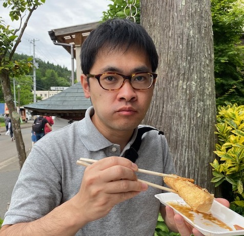

Keita Kunikawa | 國川 慶太
Welcome to my page
- My name is Keita KUNIKAWA (國川 慶太)
- I am a Lecturer at Tokushima Universitysince April 2023
- 
Affiliation
- Department of Mathematical Sciences, Faculty of Science and Technology
Research Interests
- Differential Geometry and Geometric Analysis
- Elliptic and Parabolic PDEs on Riemannian manifolds
Contact
- Email: kunikawa@# (replace # with "tokushima-u.ac.jp")
- Address: 2-1 Minamijosanjima, Tokushima, 770-8506 JAPAN
- Office: Room 2S22 in Building No.1, Faculty of Integrated Arts and Sciences, Josanjima Area
所属
- 大学院社会産業理工学研究部 数理科学系 講師 (2023年4月 ～ )
専門分野
- 微分幾何学 および 幾何解析
- リーマン多様体上の楕円型・放物型偏微分方程式
連絡先
- メール: kunikawa@# (# を "tokushima-u.ac.jp" に置き換えてください)
- 住所: 〒770-8506 徳島市南常三島町2丁目1番地
- 居室: 常三島キャンパス 総合科学部1号館 2S22